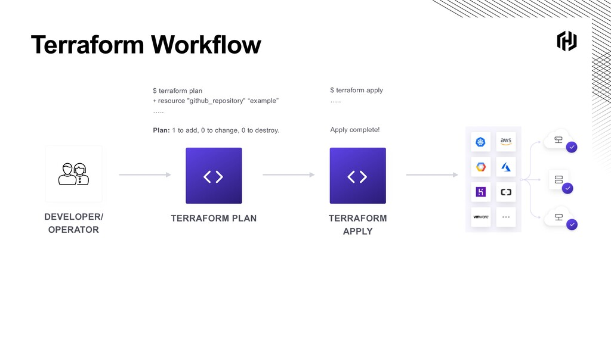
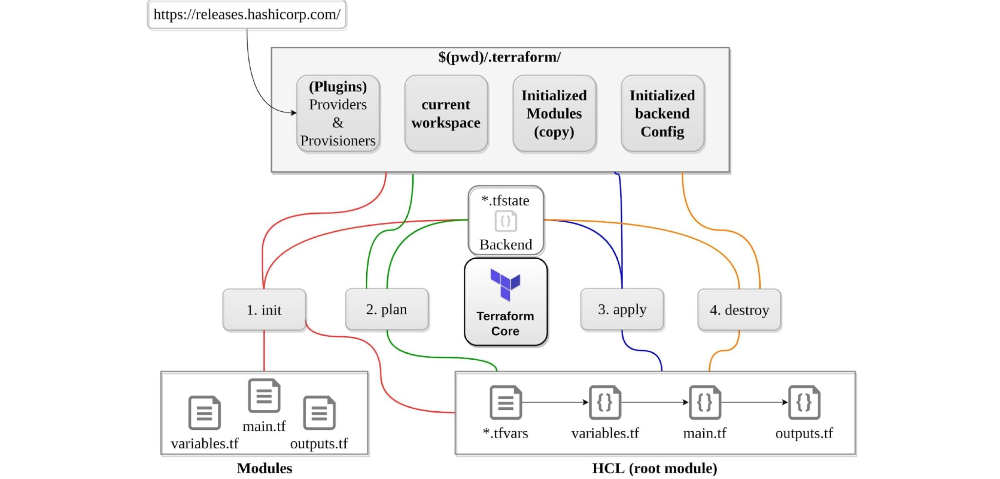

Terraform là gì?
Terraform là một công cụ mã nguồn mở cho phép bạn định nghĩa Infrastructure as Code - IaC với đa dạng cloud provider ví dụ: Alibaba Cloud, AWS, Azure … được quản lý bởi HashiCorp. Terraform giúp bạn quản lý hệ thống bằng code và tự động hóa việc triển khai hạ tầng của bạn. Bạn có thể sử dụng Terraform để quản lý các tài nguyên như máy chủ, mạng, cơ sở dữ liệu và các tài nguyên khác của các nhà cung cấp đám mây khác nhau.
- Quản lý tài nguyên đám mây đa nền tảng.
- Quản lý các phiên bản khác nhau của cơ sở hạ tầng.
- Quản lý các phụ thuộc giữa các tài nguyên.
- Tự động hóa việc triển khai và cập nhật cơ sở hạ tầng.
Terraform sử dụng ngôn ngữ HCL (HashiCorp Configuration Language) để định nghĩa cấu trúc hạ tầng của bạn và có thể được sử dụng để quản lý hạ tầng trên nhiều nhà cung cấp đám mây khác nhau.

"Terraform là một công cụ phần mềm cơ sở hạ tầng dưới dạng mã mã nguồn mở cung cấp quy trình làm việc với CLI để quản lý hàng trăm dịch vụ điện toán đám mây. Terraform mã hoá các API của các nhà cung cấp thành các tệp cấu hình khai báo"
HashiCorp có nguồn tài nguyên tuyệt vời tại HashiCorp Learn bao gồm tất cả các sản phẩm của họ và cung cấp một số bản demo hướng dẫn rất tốt khi bạn đang cố gắng làm việc với Cơ sở hạ tầng dưới dạng mã (IaC)
Các công cụ thay thế Terraform
Một số công cụ tương đương với Terraform mà bạn có thể tham khảo bao gồm:
- Chef Infra
- Ansible
- Puppet
- SaltStack
- Pulumi
- CloudFormation của AWS
- Azure Resource Manager
- Google Cloud Deployment Manager
Terraform được chọn vì nó có thể giúp quản lý cơ sở hạ tầng đám mây dễ dàng và hiệu quả hơn bằng cách viết mã để tự động hóa các quy trình triển khai và cập nhật.
Terraform cũng hỗ trợ cho Alibaba Cloud thông qua provider của Alibaba Cloud. Bạn có thể sử dụng Terraform để quản lý các tài nguyên trên Alibaba Cloud như ECS instances, VPCs, ApsaraDB for RDS instances và nhiều hơn nữa.
Ngoài ra, Alibaba Cloud cũng cung cấp một giải pháp sử dụng Terraform để triển khai và quản lý hạ tầng của mình.
Tổng quan về Terraform
Terraform là một công cụ tập trung vào việc cung cấp hạ tầng, Terraform là một CLI có khả năng khởi tạo, cung cấp các môi trường cơ sở hạ tầng phức tạp. Với Terraform, chúng ta có thể xác định các yêu cầu cơ sở hạ tầng phức tạp tồn tại cục bộ hoặc từ xa (điện toán đám mây).
Terraform không chỉ cho phép chúng ta xây dựng mọi thứ từ đầu mà còn duy trì và cập nhật các tài nguyên đó theo suốt vòng đời của chúng.
Chúng ta sẽ đề cập tới high level trong bài viết này, bạn có thể biết thêm chi tiết và tìm hiểu các tài nguyên khác tại trang terraform.io
Write
Terraform cho phép chúng ta tạo các tệp cấu hình khai báo để xây dựng môi trường của chúng ta. Các tệp được viết bằng ngôn ngữ cấu hình của HashiCorp (HCL - HashiCorp Configuration Language) cho phép mô tả ngắn gọn các tài nguyên bằng cách sử dụng các khối, đối số và biểu thức. Tất nhiên, chúng ta sẽ xem xét những điều này một cách chi tiết khi triển khai VM, Container và Kubernetes.
Plan
Khả năng kiểm tra xem các tệp cấu hình trên có triển khai những gì chúng ta muốn thấy hay không bằng cách sử dụng các chức năng cụ thể của Terraform CLI trước khi triển khai hoặc thay đổi bất cứ thứ gì. Hãy nhớ rằng Terraform là một công cụ được sử dụng xuyên suốt cho cơ sở hạ tầng của bạn, nếu bạn muốn thay đổi các khía cạnh của cơ sở hạ tầng của mình, bạn nên thực hiện điều đó thông qua Terraform để tất cả mọi thứ được nắm bắt thông qua mã.
Apply
Khi đã hài lòng, bạn có thể áp dụng cấu hình này cho nhiều providers có sẵn trong Terraform. Bạn có thể thấy danh sách các provider có sẵn tại đây
Một điều khác cần đề cập là cũng có sẵn các modules, nó tương tự như container images ở chỗ các modules này đã được tạo và chia sẻ công khai, do đó bạn không phải tạo đi tạo lại chúng mà chỉ cần sử dụng lại cách tốt nhất để triển khai một tài nguyên cụ thể theo cùng một cách ở mọi nơi. Bạn có thể tìm thấy các module có sẵn tại đây
Quy trình làm việc của Terraform

Terraform vs Vagrant
Trong thử thách này, chúng ta đã sử dụng Vagrant, một công cụ mã nguồn mở khác của Hashicorp tập trung vào các môi trường phát triển.
- Vagrant là một công cụ tập trung vào việc quản lý môi trường phát triển
- Terraform là một công cụ để xây dựng cơ sở hạ tầng.
Bạn có thể tìm thấy sự so sánh giữa hai công cụ tại đây trên trang web chính thức của Hashicorp
Cài đặt Terraform

Terraform hỗ trợ nhiều hệ điều hành khác nhau như Windows, Linux, MacOS, Solaris, FreeBSD và OpenBSD... Bài viết này sẽ hướng dẫn các bạn cài trên hệ điều hành Ubuntu
wget -O- https://apt.releases.hashicorp.com/gpg | sudo gpg --dearmor -o /usr/share/keyrings/hashicorp-archive-keyring.gpg
echo "deb [signed-by=/usr/share/keyrings/hashicorp-archive-keyring.gpg] https://apt.releases.hashicorp.com $(lsb_release -cs) main" | sudo tee /etc/apt/sources.list.d/hashicorp.list
sudo apt update && sudo apt install terraform
Kiểm tra phiên bản terraform được cài đặt trên hệ thống của bạn
$ terraform --version
Terraform v1.4.5
Để xem danh sách các commands có trong terraform có thể sử dụng lệnh terraform -help
$ terraform -help
Usage: terraform [global options] <subcommand> [args]
The available commands for execution are listed below.
The primary workflow commands are given first, followed by
less common or more advanced commands.
Main commands:
init Prepare your working directory for other commands
validate Check whether the configuration is valid
plan Show changes required by the current configuration
apply Create or update infrastructure
destroy Destroy previously-created infrastructure
All other commands:
console Try Terraform expressions at an interactive command prompt
fmt Reformat your configuration in the standard style
force-unlock Release a stuck lock on the current workspace
get Install or upgrade remote Terraform modules
graph Generate a Graphviz graph of the steps in an operation
import Associate existing infrastructure with a Terraform resource
login Obtain and save credentials for a remote host
logout Remove locally-stored credentials for a remote host
metadata Metadata related commands
output Show output values from your root module
providers Show the providers required for this configuration
refresh Update the state to match remote systems
show Show the current state or a saved plan
state Advanced state management
taint Mark a resource instance as not fully functional
test Experimental support for module integration testing
untaint Remove the 'tainted' state from a resource instance
version Show the current Terraform version
workspace Workspace management
Global options (use these before the subcommand, if any):
-chdir=DIR Switch to a different working directory before executing the
given subcommand.
-help Show this help output, or the help for a specified subcommand.
-version An alias for the "version" subcommand.
Terraform sử dụng các file cấu hình để quản lý các tài nguyên cloud. Các file cấu hình này được viết bằng ngôn ngữ HashiCorp Configuration Language (HCL) hoặc JSON. Các file cấu hình này được chia thành các module, mỗi module đại diện cho một tài nguyên cloud cụ thể

- terraform init: đây là một lệnh bắt buộc cần thực hiện đầu tiên để khởi tạo một Terraform Project.
- terraform validate: sẽ tiến hành kiểm tra tất cả các Terraform configuration để đảm bảo rằng toàn bộ syntax đều chính xác. Thường sử dụng sau khi configuration files được sửa chữa để kiểm tra hợp lệ.
- terraform plan: là một dry-run command, khi thực thi terraform sẽ cấp cho mình một execution plan, có highlight các thay đổi để mình có thể xác định được các thay đổi trong configuration.
- terraform apply: Trong trường hợp chưa run CMD plan trước khi run cmd apply. Terraform sẽ tự động rerun plan và mình cần xác nhận đồng ý với execution plan mới có thể tiến hành apply.
- terraform destroy: là lệnh dùng destroy các provided, vì vậy cần cẩn thận và hiểu rõ ý nghĩa những việc đang thực hiện khi sử lệnh này đặc biệt là trên môi trường production.
Cách thành phần chính trong Terraform
Một RootModule thông thường sẽ có 3 Terraform files chính:
- main.tf: file là file tập trung các config Terraform chính, nằm ở root project.
- variables.tf: là file tập trung tất cả các khai bao biến, nằm ở root project.
- outputs.tf: dùng để export value sau khi terraform apply đã thực thi hoàn tất, nằm ở root project.
- terraform.tfstate(optional) dùng để quản lý state
- terraform.tfstate.backup (optional) dùng để quản lý backup state

Hướng dẫn sử dụng Terraform cơ bản với Docker
Sau khi bạn đã cài đặt Terraform xong, bạn có thể cung cấp máy chủ NGINX trong vòng chưa đầy một phút bằng cách sử dụng Docker trên Mac, Windows hoặc Linux. Yêu cầu là Docker đã được cài trên máy của bạn. Hướng dẫn này được thực hiện trên Ubuntu
Tạo thư mục có tên là learn-terraform-docker-container và cd vào thư mục này
$ mkdir learn-terraform-docker-container
$ cd learn-terraform-docker-container
Tại thư mục learn-terraform-docker-container, tạo file main.tf
terraform {
required_providers {
docker = {
source = "kreuzwerker/docker"
version = "~> 3.0.1"
}
}
}
provider "docker" {}
resource "docker_image" "nginx" {
name = "nginx"
keep_locally = false
}
resource "docker_container" "nginx" {
image = docker_image.nginx.image_id
name = "tutorial"
ports {
internal = 80
external = 8000
}
}
Vì đây là lần đầu tiên chúng ta chạy dự án này, chúng ta cần khởi tạo nó bằng lệnh init
$ terraform init
Tiếp tục chạy lệnh terraform apply, nhập giá trị yes và nhấn Enter để xác nhận
$ terraform apply
Trên trình duyệt truy cập localhost:8000 để xem kết quả

Chạy lệnh docker ps để kiểm tra
$ docker ps
CONTAINER ID IMAGE COMMAND CREATED STATUS PORTS NAMES
624f6b5b1621 6efc10a0510f "/docker-entrypoint.…" 3 seconds ago Up 2 seconds 0.0.0.0:8000->80/tcp tutorial
Kiểm tra trạng thái bằng lệnh terraform show
$ terraform show
# docker_container.nginx:
resource "docker_container" "nginx" {
attach = false
command = [
"nginx",
"-g",
"daemon off;",
]
cpu_shares = 0
entrypoint = [
"/docker-entrypoint.sh",
]
env = []
gateway = "172.17.0.1"
hostname = "2834ad628337"
id = "2834ad6283372ceb61121739ce71d31cb0237ad50f4dc234e3445c9445439181"
image = "sha256:d1a364dc548d5357f0da3268c888e1971bbdb957ee3f028fe7194f1d61c6fdee"
init = false
ip_address = "172.17.0.2"
ip_prefix_length = 16
ipc_mode = "private"
log_driver = "json-file"
logs = false
max_retry_count = 0
memory = 0
memory_swap = 0
must_run = true
name = "tutorial"
network_data = [
{
gateway = "172.17.0.1"
global_ipv6_address = ""
global_ipv6_prefix_length = 0
ip_address = "172.17.0.2"
ip_prefix_length = 16
ipv6_gateway = ""
network_name = "bridge"
},
]
network_mode = "default"
privileged = false
publish_all_ports = false
read_only = false
remove_volumes = true
restart = "no"
rm = false
security_opts = []
shm_size = 64
start = true
stdin_open = false
tty = false
ports {
external = 8000
internal = 80
ip = "0.0.0.0"
protocol = "tcp"
}
}
docker_image.nginx:
resource "docker_image" "nginx" {
id = "sha256:d1a364dc548d5357f0da3268c888e1971bbdb957ee3f028fe7194f1d61c6fdeenginx:latest"
keep_locally = false
latest = "sha256:d1a364dc548d5357f0da3268c888e1971bbdb957ee3f028fe7194f1d61c6fdee"
name = "nginx:latest"
}
Terraform có một lệnh tích hợp có tên là terraform state để quản lý trạng thái
$ terraform state list
docker_container.nginx
docker_image.nginx
Một số lệnh khác trên Terraform
-
terraform apply -auto-approve là một tham số có thể được truyền vào lệnh terraform apply để bỏ qua xác nhận yes. Nó cũng có thể được kết hợp với các tùy chọn khác như -input=false để vô hiệu hóa các lời nhắc đầu vào. Thường được dùng trong automation CI/CD pipelines.
-
terraform fmt là một lệnh trong Terraform được sử dụng để định dạng lại các file cấu hình của Terraform thành một định dạng chuẩn và đẹp hơn. Lệnh này áp dụng một số quy ước về kiểu ngôn ngữ Terraform, cùng với các điều chỉnh khác cho tính đọc hiểu
-
terraform validate là một lệnh trong Terraform được sử dụng để kiểm tra xem các file cấu hình của Terraform có hợp lệ hay không. Lệnh này sẽ kiểm tra xem các file cấu hình của Terraform có đúng cú pháp không và có thể được áp dụng thành công hay không.
-
terraform destroy là một lệnh trong Terraform được sử dụng để xóa các tài nguyên được tạo ra bởi Terraform. Lệnh này sẽ xóa các tài nguyên được tạo ra bởi Terraform theo thứ tự ngược lại với thứ tự mà chúng được tạo ra
Tài liệu tham khảo:
- https://github.com/aliyun/terraform-provider-alicloud
- https://github.com/terraform-alicloud-modules
- https://registry.terraform.io/namespaces/terraform-alicloud-modules
- https://registry.terraform.io/providers/aliyun/alicloud/latest/docs
- https://www.alibabacloud.com/help/en/terraform/latest/what-is-terraform
- https://www.alibabacloud.com/vi/solutions/devops/terraform
- https://developer.hashicorp.com/terraform/tutorials/docker-get-started